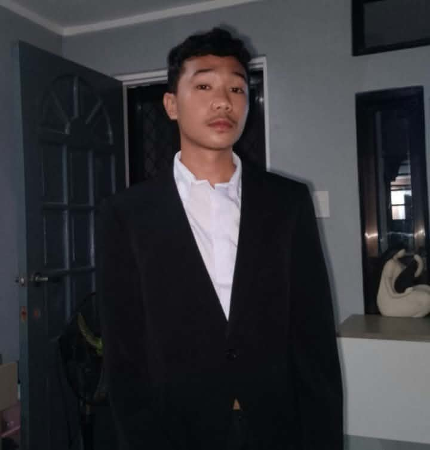
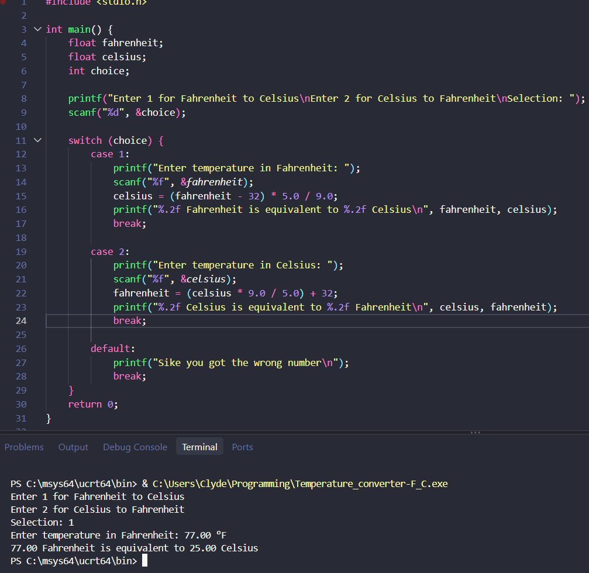

I'm a first-year BSIT student from Lapu-Lapu City who loves learning how websites and programs are built. I'm currently practicing HTML, CSS, and C, and I enjoy turning small ideas into things that actually work.

I'm John Clyde Tonggoy, a first-year Bachelor of Science in Information Technology student from Basak, Lapu-Lapu City. I finished the ICT track at Cebu Far East Institute, and during my work immersion at a phone repair shop, I became curious about gadgets and hardware. Since then, I've wanted to learn more about technology.
Outside of school, I love cooking tasty food and I'm practicing to become a house husband. I also enjoy playing guitar and writing, and I'm always ready to learn something new.
To know more about me, feel free to scroll down or reach out through the contact section.
Project Demo: Bulk Wedding Invitation Mail Merge. Fast, automated, and personalized data handling with real-time countdown calculations.
A simple C program that converts temperature between Fahrenheit and Celsius both ways.

Here's a brief overview of my educational background.
Technical-Vocational-Livelihood Track – Information and Communication Technology
📍 Sitio Lugsungon B-compound, Baptist Drive, Basak, Lapu-Lapu City
Junior High School
📍 George Tampus St., Basak, Lapu-Lapu City
A few milestones from school and my own learning, each one taught me something new.
Solo Learn
Earned the "Introduction to C" certification from Sololearn,
knowing the basics of programming. This course validated my understanding of fundamental
concepts including input/output handling, and if-else conditional logic.
2nd Placer, Feature Writing (English)
Awarded 2nd Place in Feature Writing
(English) at the District Level Schools Press Conference (SY 2023–2024). This achievement shows
my ability to write clear, structured stories under a time limit. It also helped me practice and
improve my English writing and communication skills.
Awarded "Best Research Defender" at Cebu Far East Institute. This medal was given for doing my best during our group's research presentation and answering the panel's questions. It was a good experience that helped me practice my speaking skills and handle pressure.
Received the Leadership Award (SY 2023–2024) for serving in the Guitar Club at
Basak Night High School. This certificate was given for helping out with club activities and
working together with other members. It was a great experience that helped me practice being
responsible and supportive in
a student group.
I'm just starting out, but these jobs and trainings taught me a lot about hard work and responsibility.
Zicotech RepairShop | 10 days (Work Emmersion)
Worked as a Technician Trainee, learning how to replace broken phone parts like LCD screens, buttons, and batteries. This role gave me hands-on experience in basic mobile troubleshooting, handling repair tools, and fixing hardware issues.
Informal | 2022
Worked as a Construction Helper, assisting with daily tasks on the job site. My duties included carrying materials, cleaning work areas, and helping the team with basic physical labor to keep operations running safely and smoothly.
Savora Catering Service | Oncall
Worked as part of a Catering Crew, assisting with food preparation, venue setup, and serving guests during events. This role helped me practice teamwork, follow food safety guidelines, and maintain a clean, organized workspace under fast-paced conditions.
I’m looking for opportunities to gain real experience in technology, and I’m ready to learn and work hard. If you’d like to connect, feel free to message me through any of the details below.